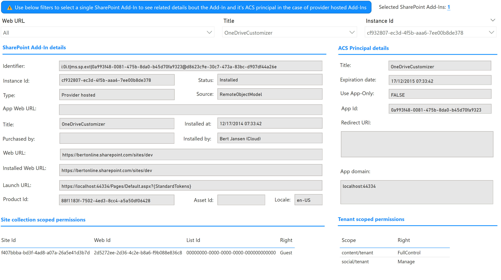

SharePoint Add-In details
Using this report page you'll be able to see all details of a selected SharePoint Add-Ins, SharePoint Add-Ins are a legacy extensibility method enabling you to build SharePoint Hosted Ad-Ins (hosted in an app web in SharePoint) and Provider Hosted Add-Ins (hosted by a service provider) which depend on Azure ACS to communicate with SharePoint.
Important
Use the top filters for Web URL, Title and Instance Id to filter down to one selected SharePoint Add-In. Use the Selected SharePoint Add-Ins value to confirm the filtering.
Once filtered you'll find four sections with information.
SharePoint Add-In details
In this section you'll find all the details of the selected SharePoint Add-In, key fields to pay attention to are:
- Type: Is this a SharePoint Hosted, Provider Hosted or Hybrid Add-In? The latter category is when an Add-In is both (having an app web and an ACS principal).
- Source : Is this a SharePoint Add-In coming from the marketplace, local tenant app catalog of elsewhere?
More details about the returned field and their possible values can be found in the documentation of the generated SharePoint Add-Ins csv file.
ACS Principal details
Provider Hosted SharePoint Add-Ins use an Azure ACS principal (a.k.a application) to enable the Add-In provider code to call back into the needed SharePoint APIs (e.g. the Add-In will add a list item). The details of the used Azure ACS principal are shown in this section, key fields are:
- Expiration date: By default the Azure ACS principals are generated with a two year valid secret, this field shows the expiration date of the most recent secret. If the secret has expired it means the SharePoint Add-In is not able to read/update data in SharePoint Online and is in a broken state
- Use App-Only: Can this ACS principal be used in scenarios that require application permissions?
More details about the returned field and their possible values can be found in the documentation of the generated Azure ACS principals csv file.
Site collection scoped permissions
Azure ACS principals are configured with permission scopes detailing what content they can access and what right they have for that content. If an Azure ACS principal is granted access to one or more specific site collections, specific webs or specific lists then you'll be able to see the respective site collection, web and list id's with their associated right in the shown table.
More details about the returned field and their possible values can be found in the documentation of the generated Azure ACS site collection scoped permissions csv file.
Tenant scoped permissions
Azure ACS principals are configured with permission scopes detailing what content they can access and what right they have for that content. If an Azure ACS principal is granted access to content across the complete tenant then you'll be able to see the content scope and associated right in the shown table.
More details about the returned field and their possible values can be found in the documentation of the generated Azure ACS site collection scoped permissions csv file.
Sample page
